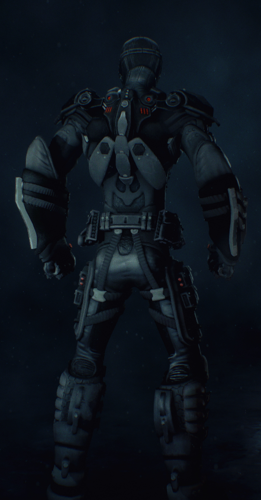

Widowbat.
All rights to Batman: Arkham Knight belong to Warner Bros. Interactive Entertainment.
Mods allow independent developers to implement fan-created content into video games.
I've made mods as a hobby in the past, but Widowbat was by far the most complex modding project I've undertaken.
I needed the design to stand out without clashing with the game's art direction. I also wanted to include small, intricate
mechanical details, which would move in cutscenes during close-ups. I landed on the tactical, slightly cobbled together look,
and the excessively padded forearms and large, unsettling eyes.
With the design finished and sketched, I moved over to Blender and Substance Painter for 3D-work and texturing.
The primary challenge was making sure the model would work in game, which required concidertion during every step.
I had to reverse engineer a character from the game in order to make mine work, with the help of community resources.
I created a full-fledged game ready asset, and published it. Although I primarily took on
this project for the sake of practise, based on community reception, I concider the it an absolute success.
_Widowbat can be found on Nexusmods_
-

- 
-

-

-